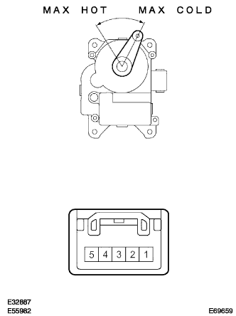
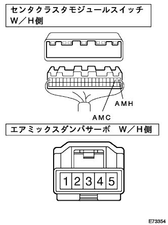

DTC A/C エアミックスダンパ作動回路 |
| 表示コード | 診断内容
| 点検部位 |
|---|---|---|
| A/C |
|
|
| 手順1 | アクチュエーターチェック |
エンジンを始動し、十分暖機する。
アクチュエータチェックモードにし、エアミックスダンパサーボ(エアミックスダンパ開度)の作動を点検する。
| ステップ | 設定温度 | ブロワレベル | 吹出口 | 吸込口 | コンプレッサ作動状態 | エアミックスダンパ開度 |
|---|---|---|---|---|---|---|
| 1 | MAX COLD－20.5 | 0 | FACE | 外気位置 | OFF | 0% |
| 2 | 21.0-22.5 | 1 | B/L | 外気位置 | ON | 0%(冷風) |
| 3 | 23.0-25.0 | 1 | FOOT1 | 外気位置(除く寒冷地) 内外気二層位置(寒冷地) | ON | 50% |
| 4 | 25.5-27.5 | 16 | FOOT2 | 内気位置 | ON | 50% |
| 5 | 28.0-30.0 | 16 | F/D | 内気位置 | ON | 100%(暖風) |
| 6 | 30.5-MAX HOT | 31 | DEF | 内気位置 | ON | 100%(暖風) |
|
| ||||
| NG | |
| 手順2 | エアミックス ダンパ サーボSUB-ASSY単体点検 |
エアミックスダンパサーボを取りはずす。
|  |
コネクタ5(MHOT)端子にバッテリーのプラス、4(MCOLD)端子にバッテリーのマイナスを接続したとき、アームがMAX COLD位置からMAX HOT位置までスムースに回転することを確認する。
コネクタ4(MCOLD)端子にバッテリーのプラス、5(MHOT)端子にバッテリーのマイナスを接続したとき、アームがMAX HOT 位置からMAX COLD位置までスムースに回転することを確認する。
|
| ||||
| OK | |
| 手順3 | ワイヤハーネスまたはコネクター点検（エアコンディショナアンプリファイヤＡＳＳＹ-エアミックスダン） |
センタクラスタモジュールスイッチのコネクタを切り離す。
|  |
SST(トヨタエレクトリカルテスター)を使用して、車両ワイヤハーネスの各コネクタ端子間の導通およびGNDショート(短絡)を点検する。
| センタクラスタモジュールスイッチ側 端子番号(端子記号) | エアミックスダンパサーボ側 端子番号 |
|---|---|
| A2(AMC) | 4 |
| A1(AMH) | 5 |
|
| ||||
| OK | ||
| ||